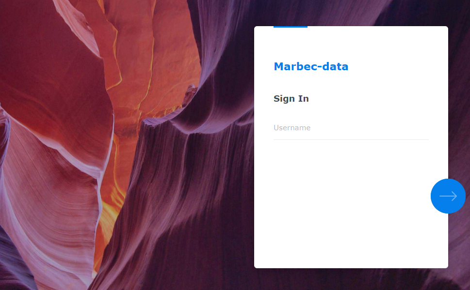
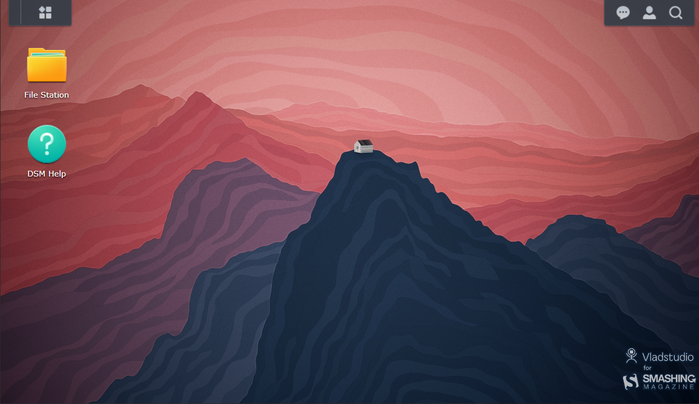
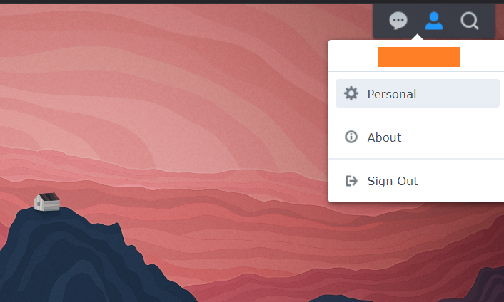
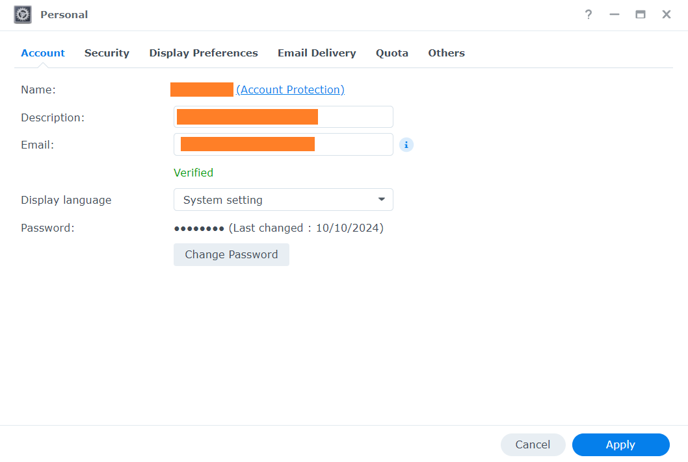
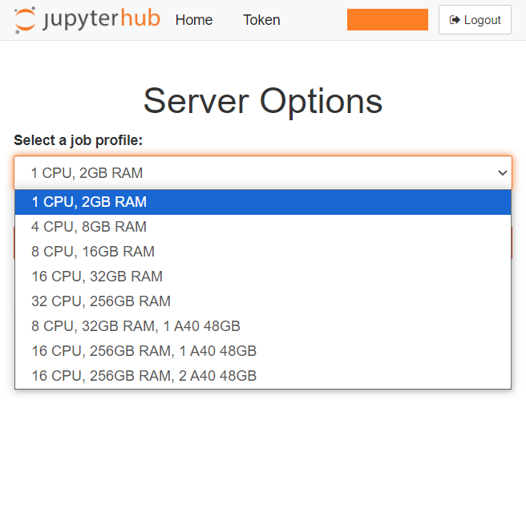

Introducción a marbec-data and marbec-gpu
¿Qué son y cómo acceder a ellos?
Créditos de la imagen: Diego Fernandez en Unplash
Introducción a marbec-data y marbec-gpu
¿Qué son? ¿Son lo mismo?
No. marbec-data y marbec-gpu componen un Sistema de cómputo de alto rendimiento (High-performance computing). (Muy) Básicamente, es como tener una supercomputadora a tu disposición para resolver problemas complejos. Imagina que, en lugar de tener un único procesador (Intel/AMD) trabajando en conjunto con la RAM y el espacio de almacenamiento de únicamente tu computadora (e.g. tu laptop), tienes a varias computadoras unidas entre sí combinando su potencia para ejecutar procesos complejos. Así es como funciona un HPC: utiliza múltiples computadoras trabajando juntas para resolver cálculos muy grandes mucho más rápido de lo que una sola computadora personal podría hacerlo. El HPC de Marbec se compone de dos sistemas: marbec-data (un sistema de almacenamiento distribuido o NFS por las siglas en inglés de Network File System) y marbec-gpu(un clúster de cómputo).
Un NFS es un protocolo de red que permite a múltiples dispositivos conectados a una red compartir archivos y directorios. Esto permite a los investigadores el almacenamiento de los datos de entrada, códigos y resultados, pero con la ventaja de tener una copia de seguridad centralizada y la posibilidad de acceder a sus archivos desde cualquier máquina conectada al clúster. En palabras muy simples y volviendo a la analogía con tu actual PC, marbec-data hace las veces del almacenamiento (i.e. del disco duro) en el HPC. Por otro lado, un clúster de cómputo es, en esencia, un conjunto de elementos de cómputo interconectados que trabajan de forma coordinada para ejecutar procesos computacionales complejos. Dentro de la analogía de tu PC actual, marbec-gpu equivale a: tu procesador principal (CPU), tu procesador de gráficos (GPU), la RAM general y la de vídeo. Por supuesto, con estas simplificaciones estamos obviando algunos detalles importantes que iremos explicando a profundidad conforme lo necesitemos.
Potencia de marbec-gpu
A octubre 2024, marbec-gpu cuenta con:
- CPU: 4 x [Intel(R) Xeon(R) Platinum 8380 @2.30GHz, 40 physical cores, 80 logical cores]
- RAM: 1.5 TB DDR4
- GPU: 2 x [NVIDIA A40, 48 GB ECC GDDR6 RAM, 10’752 CUDA cores, 336 tensor cores, 696 GB/s bandwidth]
¿Cómo acceder a marbec-data?
Esto dependerá de lo que necesitemos hacer. Si únicamente queremos echar un vistazo rápido a los archivos y revisar aspectos de nuestra cuenta, bastará con abrir una ventana de navegador e ir a la dirección https://marbec-data.ird.fr/. Se abrirá una interfaz de logueo en donde bastará con colocar nuestras credenciales de acceso (brindadas por los administradores de marbec-gpu).

Una vez adentro, veremos una interfaz similar a un escritorio en donde se mostrará un par de íconos de acceso a nuestros directorios compartidos y a documentación general de uso de la plataforma.

¿Cómo cambiar nuestra contraseña de marbec-data?
Empezaremos con un click sobre el ícono de opciones de usuario (el que parece una personita que se halla arriba a la derecha) y seleccionaremos la opción Personal.

Se abrirá una pequeña ventana en donde en la primera pestaña mostrada (Account), tendremos acceso a cambiar nuestra contraseña (Change password). Así mismo, en la pestaña Display Preferences, podremos cambiar aspectos como el idioma de la interfaz o la imagen de escritorio y los colores.

Verificar el espacio disponible en marbec-data
Desde la misma ventana de Personal vista en la sección anterior, en la pestaña Quota podremos verificar el límite de almacenamiento asignado a nuestro usuario y lo utilizado hasta el momento en cada una de las carpetas asociadas a nuestro usuario. Esta es una manera sencilla y gráfica de visualizar el espacio disponible que nos queda. Si en algún momento necesitamos de más espacio, basta con solicitarlo por e-mail a los administradores de marbec-data.

Si en algún momento durante la ejecución de un proceso se alcanza el límite de la cuota asignada, el sistema bloqueará cualquier intento de guardado de archivos y esto dará lugar a la finalización imprevista del proceso o a errores relacionados a problemas de escritura en disco.
¿Cómo manejar archivos dentro de marbec-data o entre marbec-data y nuestra PC?
Tenemos un post en donde desarrollamos más a detalle este punto.
¿Cómo acceder a marbec-gpu?
La manera más sencilla de acceder a marbec-gpu es a través de un navegador utilizando el entorno de JupyterLab. Para esto, bastará con abrir una ventana de navegador (Chrome, Firefox, Brave, etc.) e ir a la dirección https://marbec-gpu.ird.fr/. Se mostrará una ventana para ingresar nuestras credenciales (OJO: No necesariamente son las mismas que las de marbec-data) y posteriormente daremos click al botón de Start my server. A continuación, se mostrará un menú desplegable en donde podremos elegir diferentes configuraciones predeterminadas de potencia de cálculo para nuestra sesión.

Si bien, hace un momento indicamos que marbec-gpu dispone de una buena cantidad CPUs, GPUs y RAM, eso representa el 100% de su potencia absoluta y marbec-gpu es un servicio compartido, por lo que no es posible (permitido) que un solo usuario pueda acaparar el 100% de su capacidad. Es por ello que la primera elección consistirá en decidir cuál es la potencia que requerimos para nuestro proceso. Por ejemplo, si lo que deseamos es ejecutar un proceso de automatizado de descarga de información satelital, bastará con reservar 1 CPU y 2GB de RAM. De otro modo, si nuestro script solo está configurado (y probado) para utilizar núcleos de CPU, no es necesario reservar aquellas configuraciones que incluyan GPUs. Recuerda que si seleccionas una opción muy potente que no aprovecharás, no estará disponible para alguien más que sí podría necesitarla realmente (elige sabiamente).
Luego de haber seleccionado (y reservado) los recursos para nuestra sesión y haberle dado click a Start, se nos mostrará una ventana con el Launcher de JupyterLab. En ella, podremos observar los distintos aplicativos preinstalados y disponibles. El principal de todos será el de Terminal, que es con el que lanzaremos (ejecutaremos) nuestros procesos (scripts).
Cambiar contraseña en marbec-gpu
A partir del paso anterior, empezaremos por abrir una ventana de Terminal (dándole click al ícono correspondiente) y la ventana que se abre escribiremos el comando passwd (y luego Enter). A continuación, nos solicitará que escribamos nuestra contraseña actual y la nueva. OJO: por defecto y por seguridad, durante el proceso de cambio de contraseña NO se muestra ningún cursor mientras se escribe, por lo que podría parecer que nuestro teclado no está funcionando, pero esto no es así. Usted escriba con normalidad.
Es muy importante que se defina contraseñas seguras (alfanuméricas con símbolos y mayúsculas-minúsculas) y de preferencia distintas para el inicio de sesión en marbec-data y marbec-gpu. Por otro lado, el entorno de JupyterLab SÍ permite el uso de shortcuts clásicos como Ctrl+C-Ctrl+V (o Cmd+C-Cmd+V en MacOS) para copiar-pegar cadenas de carcateres, por lo que es posible utilizarlos durante el proceso de cambio de contraseña con el comando passwd.
¿Cómo ejecutar un proceso en marbec-gpu?
Tenemos un post en donde desarrollamos más a detalle este punto.